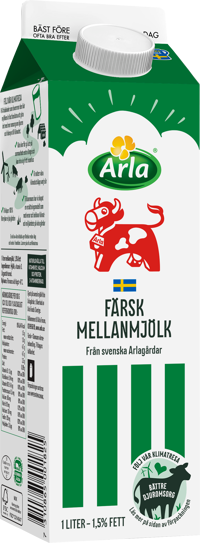
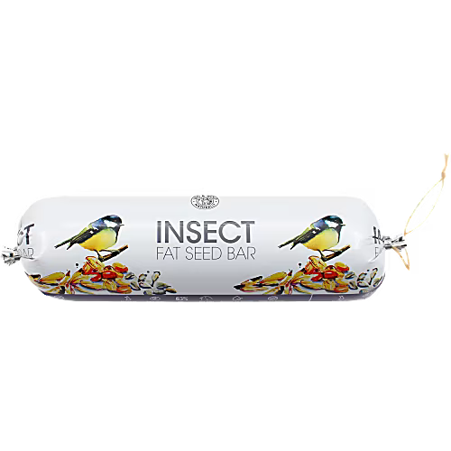

Aviation The Secret Social Lives of Sparrows Sparrows may look like humble backyard visitors, but their social behavior is incredibly rich. These birds maintain lifelong partnerships, engage in group communication through subtle chirps, and even exhibit signs of peer influence. Studies have shown that sparrows in different flocks adopt unique “dialects,” showcasing cultural evolution in real time. Lina Forsberg 1 aug 2026
Aviation Magpies: The Masters of Memory Magpies can remember hundreds of hiding spots for their food and recall them months later. Their spatial memory rivals that of mammals, and they even recognize themselves in mirrors—a rare trait in the animal kingdom. Anna Bergström 15 sep 2026
Aviation Starlings and the Murmuration Mystery Starlings create mesmerizing aerial displays called murmurations, moving in perfect synchrony. Scientists believe these flocks react in milliseconds to neighbors, forming living clouds that confuse predators and dazzle onlookers. Oskar Nilsson 22 sep 2026
Beaks Woodpeckers: Nature’s Drummers Woodpeckers drum on trees not just for food, but to communicateterritory and attract mates. Their skulls are specially adapted to absorb shock, preventing brain injury from thousands of pecks each day. Maja Svensson 1 okt 2026
Silence Migration Owls: Silent Hunters of the Night Owls fly almost silently thanks to unique feather structures that muffle sound. Their exceptional hearing and night vision allow them to locate prey in total darkness, making them formidable nocturnal predators. Erik Johansson 10 okt 2026
Aviation Crows Are Smarter Than Your Dog Crows don’t just mimic—they solve puzzles, recognize faces, and even pass knowledge across generations. In one experiment, a crow used three tools in sequence to retrieve food—something that puts them on par with chimpanzees in cognitive ability. Some urban crows even place nuts on crosswalks and wait for cars to crack them open. Emil Jansson 2 aug 2026
Aviation How Swallows Navigate the Globe Every year, swallows migrate thousands of kilometers between continents with unerring accuracy. Without GPS or maps, they rely on magnetic fields, the position of the sun, and even the polarization of light. These migrations are a triumph of evolutionary engineering, and some swallows return to the exact same nest site every season. Johan Lindström 2 aug 2026
Aviation Why Robins Are Always Watching Robins may seem like innocent garden guests, but their keen eyesight and territorial behavior make them relentless observers. Males patrol their turf aggressively and can remember the precise location of feeders, nests, and rival birds. They’re also one of the few birds who can spot earthworms just below the soil surface. Karin Holmberg 2 aug 2026
Aviation The Return of the White-Tailed Eagle Driven to near extinction in parts of Europe, the white-tailed eagle has made a dramatic comeback thanks to conservation efforts. With a wingspan of over two meters and a commanding presence over lakes and coastal cliffs, its return symbolizes hope. These birds now thrive in areas where pollution, hunting, and habitat loss once wiped them out. Niklas Eklund 2 aug 2026
 Mejeri Mellanmjölk Arla. 1,5 l. Mellanmjölk har en härligt fyllig mjölksmak och är ett populärt val till frukostflingorna, gröten eller som måltidsdryck. Mjölk är en naturlig källa till protein, kalcium och vitamin B12. Protein bidrar till muskeluppbyggnad och kalcium behövs för att bibehålla en normal benstomme. 24.4 kr/st Jfr pris 23,61 kr/kg
Nyhet Uppstoppad kråka Naturvårdsverket. 1,25 kg. Huvudregeln är att vilt som omhändertagits, påträffats dött eller dödas tillfaller jakträttshavaren. 2 499 kr/st Jfr pris 2499 kr/st
 Talgfröbar Insekt Vildfåglar Leo & Wolf. 600g. 39,95 kr/st Jfr pris 66,58 kr/kg Add to cart
Aviation Parrots Don’t Just Copy — They Learn Parrots are far more than mimics. In controlled environments, they’ve demonstrated the ability to understand context, learn new words unprompted, and even joke around with humans. Some species, like the African Grey, can grasp concepts of color, quantity, and shape, rivaling the communication ability of small children. Sara Wiman 2 aug 2026
Aviation Nightjars and the Art of Silence Nightjars are the silent phantoms of twilight. These birds fly with an almost supernatural quietness, thanks to feather adaptations that absorb sound. Camouflaged perfectly into bark and leaf litter, they’re almost impossible to spot during the day. Their haunting calls and nocturnal behavior have inspired legends across cultures. David Skoglund 2 aug 2026
Aviation Migration Hummingbirds: Nature’s Helicopters Hummingbirds are evolutionary marvels. They can hover, fly backward, and flap their wings up to 80 times per second. To fuel this high-speed lifestyle, they consume half their body weight in nectar each day and have the fastest metabolism of any vertebrate. Their shimmering feathers are not pigmented—they refract light like tiny prisms. Emil Mårtensson 2 aug 2026
Aviation The Birds Eye View, How Ireland Went From Sugar to Honey Hummingbirds are evolutionary marvels. They can hover, fly backward, and flap their wings up to 80 times per second. To fuel this high-speed lifestyle, they consume half their body weight in nectar each day and have the fastest metabolism of any vertebrate. Their shimmering feathers are not pigmented—they refract light like tiny prisms. Emil Mårtensson 2 aug 2026
The Tiny Creatures of the Night Hummingbirds are evolutionary marvels. They can hover, fly backward, and flap their wings up to 80 times per second. 3 aug 2026
Forest Watchers Woodpeckers are forest sentinels, using their sharp hearing and powerful beaks to patrol trees and clear out pests. 6 aug 2026
Masters of the Dusk Swifts dominate twilight skies, flying thousands of kilometers and even sleeping on the wing during migration. 7 aug 2026
Echoes in the Highlands Alpine choughs thrive in brutal altitudes, gliding between peaks and scavenging with calculated intelligence. 9 aug 2026
Whispers on the Wind Starlings move in murmuration, forming massive clouds of precision flight that ripple like smoke across the sky. 10 aug 2026
Feathers & Flame The red cardinal is a striking presence in snowy forests, its call slicing through the frost with a burst of warmth. 12 aug 2026
Goldfinch in the Meadow With a song like wind chimes and flight like a rollercoaster, the goldfinch is joy incarnate among wildflowers. 12 aug 2026
Guided by the Stars Migratory thrushes chart their course at night by sensing magnetic fields and reading starlight like ancient maps. 15 aug 2026
Major Keys Eagles Don’t Perch with Pigeons In the words of DJ Khaled, “They don’t want you to fly — so what you gon’ do? Soar.” Eagles represent vision, ambition, and high altitude excellence. They ride the thermals and command the skies, unbothered by petty drama on the ground. This bird doesn’t flap around aimlessly — it glides with purpose. Major key: stay above the noise, protect your energy, and don’t forget to bless up. DJ Khaled 7 aug 2026
Ecology How Forests Remember Forests are not just collections of trees — they’re dynamic memory systems. Beneath the forest floor lies a mycorrhizal network, sometimes called the "wood wide web," where fungi connect root systems and allow trees to share nutrients, warnings, and even nurture saplings. When a tree is damaged, its neighbors often respond chemically — a form of woodland empathy. This remarkable underground communication is shaping how we think about intelligence in nature. Lina Forsberg 4 aug 2026
Seabirds Clowns of the Coastline Puffins might look comical with their colorful beaks and upright posture, but they are elite flyers and expert swimmers. Nesting in remote cliffside colonies, they spend most of their lives out at sea, returning only to breed. Their wings beat rapidly underwater to 'fly' through the ocean as they chase down small fish like sand eels. Despite their charm, puffin populations are declining due to overfishing and warming seas, making them a symbol of climate concern in the North Atlantic. Johan Lindström 6 aug 2026
Legal Why Bird Law Is Important Bird Law is a niche yet crucial branch of avian governance that outlines the legal frameworks surrounding territorial disputes, nesting rights, and migratory trespassing within and between species. While often overlooked by mainstream ornithologists, bird law scholars argue that complex patterns of behavioral precedent—such as pecking order resolutions and song-based land claims—form a coherent system of unwritten statutes. Recent disputes between corvids and gulls over coastal airspace have reignited calls for a codified Aviary Accord, though enforcement remains a challenge due to jurisdictional overlaps with squirrel tribunals and seasonal moose councils. Emil Jansson 2 aug 2026